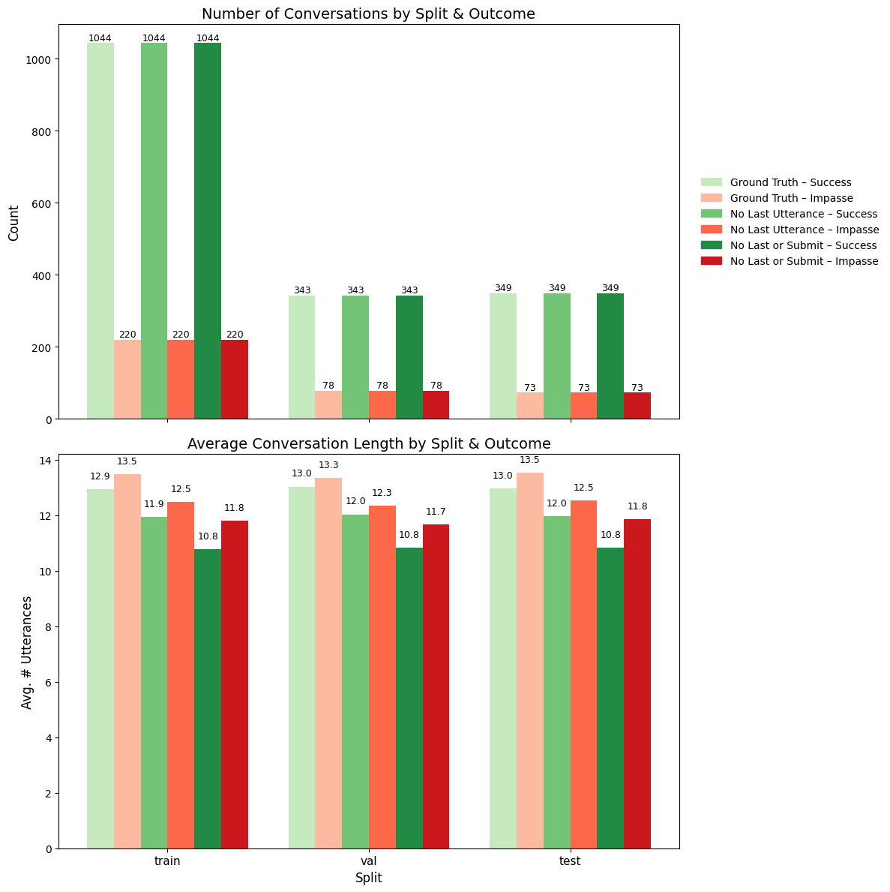
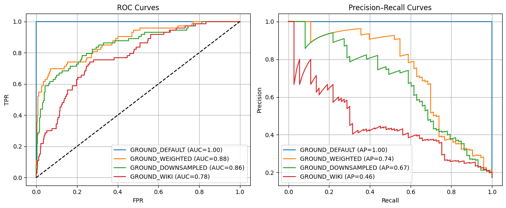
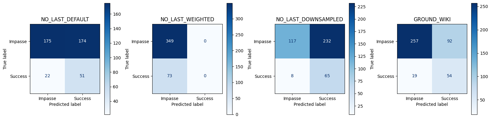
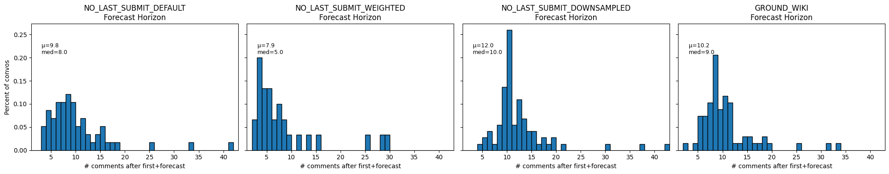
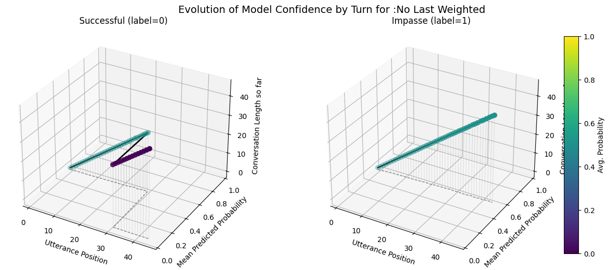
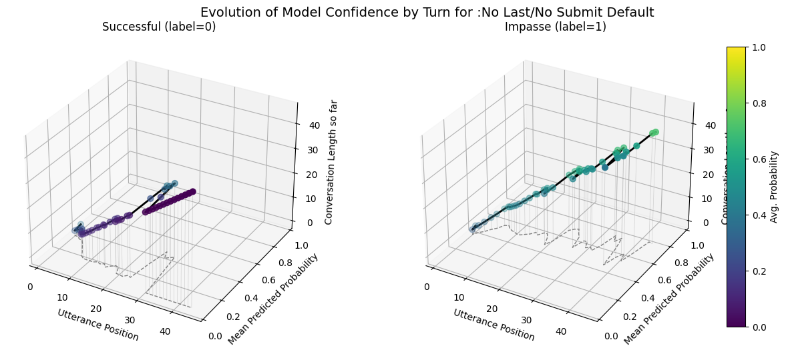
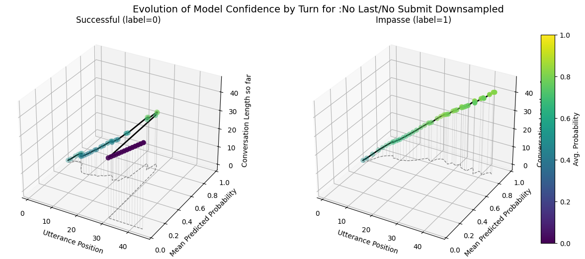

Code
!pip install convokitModel Improvement Considerations: - In craft, changed the Binary cross entropy loss to weighted Binary cross entropy loss in train.py based on class imbalance. Created Cost Sensitive CRAFT model - Downsampled from training set to get even impassee/success training split - default
“Note that by construction, the last comment of each conversation is the one marked as derailment, and that our earlier code was therefore set up to not look at the last comment, meaning that all forecasts we obtained are forecasts made prior to derailment. This simplifies the computation of forecast accuracy as we now do not need to explicitly consider when a forecast was made.”
Claim all samples in train/val set for CMV/WIKI use “last only” context (entire convo up to last comment) for training– therefor assume that last comment has the derailed event in train set. However, my plot for utterances after derailment comment for wiki test set says otherwise? There are comments after the derailment comment in test set
In Horizon paper, explicity stated ” if cₑ is the first toxic utterance at index e, we generate tuples for n=1…e–1 otherwise (a non-derailing convo), for n=1…N–1. Only WIKI was annotated at comment using “comment_has_personal_attack” meta data for each utterance.
Can we assume that an “impasse” is a derailed conversation? # Main Resources to Consider
!pip install convokit
from tqdm import tqdm
from collections import defaultdict
import pandas as pd
import pprint as pp
from IPython.display import display
import torch
import pickle
import random
from pathlib import Path
import json
import re
from collections import defaultdict
from scipy.stats import entropy
import ast
from collections import defaultdict
import importlib
import torch
import os
from pathlib import Path
from datetime import datetime
import json
import torch
import matplotlib.pyplot as plt
from sklearn.calibration import CalibrationDisplay
from sklearn.metrics import (
ConfusionMatrixDisplay,
roc_curve,
roc_auc_score,
precision_recall_curve,
average_precision_score,
)
import DataPreprocesser as dp
import CorpusUtils as corp
importlib.reload(dp) # Reload using the alias
importlib.reload(corp) # Reload using the alias--------------------------------------------------------------------------- ModuleNotFoundError Traceback (most recent call last) Cell In[1], line 34 24 from sklearn.calibration import CalibrationDisplay 25 from sklearn.metrics import ( 26 ConfusionMatrixDisplay, 27 roc_curve, (...) 30 average_precision_score, 31 ) ---> 34 import DataPreprocesser as dp 35 import CorpusUtils as corp 36 importlib.reload(dp) # Reload using the alias ModuleNotFoundError: No module named 'DataPreprocesser'
from tqdm import tqdm
from collections import defaultdict
import pandas as pd
import pprint as pp
from IPython.display import display
import torch
import pickle
import random
from pathlib import Path
import json
import re
from collections import defaultdict
from scipy.stats import entropy
import ast
from collections import defaultdict
import importlib
import torch
import os
from pathlib import Path
from datetime import datetime
import json
import torch
import matplotlib.pyplot as plt
from sklearn.calibration import CalibrationDisplay
from sklearn.metrics import (
ConfusionMatrixDisplay,
roc_curve,
roc_auc_score,
precision_recall_curve,
average_precision_score,
)
from modules.DataPreprocesser import DataPreprocesser
from modules import CorpusUtils as corp
#Convokit Imports
from convokit.forecaster.CRAFTModel import CRAFTModel
from convokit.forecaster.forecaster import Forecaster
from convokit import download, Corpus
from convokit import Corpus, Speaker, Utterance, Conversation
from functools import partial
from convokit.convokitConfig import ConvoKitConfig
#Convokit Imports
from convokit.forecaster.CRAFTModel import CRAFTModel
from convokit.forecaster.forecaster import Forecaster
from convokit import download, Corpus
from convokit import Corpus, Speaker, Utterance, Conversation
from functools import partial
from convokit.convokitConfig import ConvoKitConfigcorpus = Corpus(filename=download("conversations-gone-awry-corpus"))filepath = "/Users/mishkin/Desktop/Research/Convo_Kit/ConvoKit_Disputes/data/preprocessed_dyads.csv"
filepath_no_last = '/Users/mishkin/Desktop/Research/Convo_Kit/ConvoKit_Disputes/data/convos_exclude_last_utt.csv'
filepath_no_submit_last = '/Users/mishkin/Desktop/Research/Convo_Kit/ConvoKit_Disputes/data/convos_exclude_submit_and_last.csv'
results_filepath_no_samp = Path("/Users/mishkin/Desktop/Research/Convo_Kit/ConvoKit_Disputes/data/fine_tuning_results/nosampling/")
results_filepath_no_samp_weighted = Path("/Users/mishkin/Desktop/Research/Convo_Kit/ConvoKit_Disputes/data/fine_tuning_results/nosampling_weighted/")
results_filepath_downsampled = Path("/Users/mishkin/Desktop/Research/Convo_Kit/ConvoKit_Disputes/data/fine_tuning_results/downsampled/")
final_data = DataPreprocesser(filepath)
final_data_no_last = DataPreprocesser(filepath_no_last)
final_data_no_submit_last = DataPreprocesser(filepath_no_submit_last)
device = torch.device("cuda" if torch.cuda.is_available() else "cpu")
def makeCleanCorpora():
final_data = DataPreprocesser(filepath)
final_data_no_last = DataPreprocesser(filepath_no_last)
final_data_no_submit_last = DataPreprocesser(filepath_no_submit_last)
corpus_kodis_ground = corp.corpusBuilder(final_data)
corpus_kodis_no_last = corp.corpusBuilder(final_data_no_last)
corpus_kodis_no_submit_last = corp.corpusBuilder(final_data_no_submit_last)
return corpus_kodis_ground, corpus_kodis_no_last, corpus_kodis_no_submit_last
corpus_kodis_ground, corpus_kodis_no_last, corpus_kodis_no_submit_last = makeCleanCorpora()
display(corpus_kodis_ground.get_utterances_dataframe())
display(corpus_kodis_no_last.get_utterances_dataframe())
display(corpus_kodis_no_submit_last.get_utterances_dataframe())
# display(corpus_kodis_ground.get_utterances_dataframe())
# display(corpus_kodis_no_last.get_utterances_dataframe())
# display(corpus_kodis_no_submit_last.get_utterances_dataframe())Row Index not in columns/Users/mishkin/Desktop/Research/Convo_Kit/ConvoKit_Disputes/src/modules/DataPreprocesser.py:111: FutureWarning: Setting an item of incompatible dtype is deprecated and will raise an error in a future version of pandas. Value '1702723625' has dtype incompatible with float64, please explicitly cast to a compatible dtype first.
self.utterancesDF.loc[13988, 'timestamp']= '1702723625'Row Index not in columns/Users/mishkin/Desktop/Research/Convo_Kit/ConvoKit_Disputes/src/modules/DataPreprocesser.py:111: FutureWarning: Setting an item of incompatible dtype is deprecated and will raise an error in a future version of pandas. Value '1702723625' has dtype incompatible with float64, please explicitly cast to a compatible dtype first.
self.utterancesDF.loc[13988, 'timestamp']= '1702723625'Row Index not in columns/Users/mishkin/Desktop/Research/Convo_Kit/ConvoKit_Disputes/src/modules/DataPreprocesser.py:111: FutureWarning: Setting an item of incompatible dtype is deprecated and will raise an error in a future version of pandas. Value '1702723625' has dtype incompatible with float64, please explicitly cast to a compatible dtype first.
self.utterancesDF.loc[13988, 'timestamp']= '1702723625'Row Index not in columns/Users/mishkin/Desktop/Research/Convo_Kit/ConvoKit_Disputes/src/modules/DataPreprocesser.py:111: FutureWarning: Setting an item of incompatible dtype is deprecated and will raise an error in a future version of pandas. Value '1702723625' has dtype incompatible with float64, please explicitly cast to a compatible dtype first.
self.utterancesDF.loc[13988, 'timestamp']= '1702723625'Row Index not in columns/Users/mishkin/Desktop/Research/Convo_Kit/ConvoKit_Disputes/src/modules/DataPreprocesser.py:111: FutureWarning: Setting an item of incompatible dtype is deprecated and will raise an error in a future version of pandas. Value '1702723625' has dtype incompatible with float64, please explicitly cast to a compatible dtype first.
self.utterancesDF.loc[13988, 'timestamp']= '1702723625'Row Index not in columns/Users/mishkin/Desktop/Research/Convo_Kit/ConvoKit_Disputes/src/modules/DataPreprocesser.py:111: FutureWarning: Setting an item of incompatible dtype is deprecated and will raise an error in a future version of pandas. Value '1702723625' has dtype incompatible with float64, please explicitly cast to a compatible dtype first.
self.utterancesDF.loc[13988, 'timestamp']= '1702723625'
27498it [00:00, 52610.25it/s]
25391it [00:00, 51140.20it/s]
23117it [00:00, 70613.23it/s]| timestamp | text | speaker | reply_to | conversation_id | vectors | |
|---|---|---|---|---|---|---|
| id | ||||||
| utt0_con1 | 1699388451 | Hi there! I believe I received the wrong jerse... | Buyer_1 | None | utt0_con1 | [] |
| utt1_con1 | 1699388553 | Good afternoon! I looked over your purchase re... | Seller_1 | utt0_con1 | utt0_con1 | [] |
| utt2_con1 | 1699388719 | I appreciate your timely response! I can under... | Buyer_1 | utt1_con1 | utt0_con1 | [] |
| utt3_con1 | 1699388896 | Of course! We try to reach all our customers a... | Seller_1 | utt2_con1 | utt0_con1 | [] |
| utt4_con1 | 1699389108 | I can return the generic jersey, no problem! I... | Buyer_1 | utt3_con1 | utt0_con1 | [] |
| ... | ... | ... | ... | ... | ... | ... |
| utt6_con2880 | 1718879513 | Cool no problem, so just to clarify, you will ... | Buyer_2880 | utt5_con2880 | utt0_con2880 | [] |
| utt7_con2880 | 1718879641 | I will refund you after you have sent the item... | Seller_2880 | utt6_con2880 | utt0_con2880 | [] |
| utt8_con2880 | 1718879680 | Great thanks for this outcome, enjoy the rest ... | Buyer_2880 | utt7_con2880 | utt0_con2880 | [] |
| utt9_con2880 | 1718879753 | Submitted agreement: Buyer gets full refund, s... | Seller_2880 | utt8_con2880 | utt0_con2880 | [] |
| utt10_con2880 | 1718879772 | Accept Deal | Buyer_2880 | utt9_con2880 | utt0_con2880 | [] |
27498 rows × 6 columns
| timestamp | text | speaker | reply_to | conversation_id | vectors | |
|---|---|---|---|---|---|---|
| id | ||||||
| utt0_con1 | 1699388451 | Hi there! I believe I received the wrong jerse... | Buyer_1 | None | utt0_con1 | [] |
| utt1_con1 | 1699388553 | Good afternoon! I looked over your purchase re... | Seller_1 | utt0_con1 | utt0_con1 | [] |
| utt2_con1 | 1699388719 | I appreciate your timely response! I can under... | Buyer_1 | utt1_con1 | utt0_con1 | [] |
| utt3_con1 | 1699388896 | Of course! We try to reach all our customers a... | Seller_1 | utt2_con1 | utt0_con1 | [] |
| utt4_con1 | 1699389108 | I can return the generic jersey, no problem! I... | Buyer_1 | utt3_con1 | utt0_con1 | [] |
| ... | ... | ... | ... | ... | ... | ... |
| utt5_con2880 | 1718879412 | No problem. It happens sometimes. It will be a... | Seller_2880 | utt4_con2880 | utt0_con2880 | [] |
| utt6_con2880 | 1718879513 | Cool no problem, so just to clarify, you will ... | Buyer_2880 | utt5_con2880 | utt0_con2880 | [] |
| utt7_con2880 | 1718879641 | I will refund you after you have sent the item... | Seller_2880 | utt6_con2880 | utt0_con2880 | [] |
| utt8_con2880 | 1718879680 | Great thanks for this outcome, enjoy the rest ... | Buyer_2880 | utt7_con2880 | utt0_con2880 | [] |
| utt9_con2880 | 1718879753 | Submitted agreement: Buyer gets full refund, s... | Seller_2880 | utt8_con2880 | utt0_con2880 | [] |
25391 rows × 6 columns
| timestamp | text | speaker | reply_to | conversation_id | vectors | |
|---|---|---|---|---|---|---|
| id | ||||||
| utt0_con1 | 1699388451 | Hi there! I believe I received the wrong jerse... | Buyer_1 | None | utt0_con1 | [] |
| utt1_con1 | 1699388553 | Good afternoon! I looked over your purchase re... | Seller_1 | utt0_con1 | utt0_con1 | [] |
| utt2_con1 | 1699388719 | I appreciate your timely response! I can under... | Buyer_1 | utt1_con1 | utt0_con1 | [] |
| utt3_con1 | 1699388896 | Of course! We try to reach all our customers a... | Seller_1 | utt2_con1 | utt0_con1 | [] |
| utt4_con1 | 1699389108 | I can return the generic jersey, no problem! I... | Buyer_1 | utt3_con1 | utt0_con1 | [] |
| ... | ... | ... | ... | ... | ... | ... |
| utt4_con2880 | 1718879295 | This is great thank you, I apologise too if I ... | Buyer_2880 | utt3_con2880 | utt0_con2880 | [] |
| utt5_con2880 | 1718879412 | No problem. It happens sometimes. It will be a... | Seller_2880 | utt4_con2880 | utt0_con2880 | [] |
| utt6_con2880 | 1718879513 | Cool no problem, so just to clarify, you will ... | Buyer_2880 | utt5_con2880 | utt0_con2880 | [] |
| utt7_con2880 | 1718879641 | I will refund you after you have sent the item... | Seller_2880 | utt6_con2880 | utt0_con2880 | [] |
| utt8_con2880 | 1718879680 | Great thanks for this outcome, enjoy the rest ... | Buyer_2880 | utt7_con2880 | utt0_con2880 | [] |
23117 rows × 6 columns
def add_convo_labels(corpus, final_data):
for idx, row in final_data.getDataframe().iterrows():
convo_id = f"utt0_con{idx}" # generate conversation_id format from index
label = row["dispute_outcome"] # update if your label column is named differently
if convo_id in corpus.conversations:
corpus.get_conversation(convo_id).meta["label"] = label
add_convo_labels(corpus_kodis_ground, final_data)
add_convo_labels(corpus_kodis_no_last, final_data_no_last)
add_convo_labels(corpus_kodis_no_submit_last, final_data_no_submit_last)corpus_kodis_ground.get_conversations_dataframe()class CostSensitiveCRAFTModel(CRAFTModel):
def fit(self, contexts, val_contexts=None):
contexts = list(contexts)
if val_contexts is not None:
val_contexts = list(val_contexts)
# count labels
train_pairs = self._context_to_craft_data(iter(contexts))
labels = [label for (_ctx, _utt, label, _id) in train_pairs]
num_pos = sum(labels)
num_neg = len(labels) - num_pos
self._pos_weight = torch.tensor(num_neg / num_pos, device=self._device)
#original CRAFTModel.fit with the ORIGINAL ContextTuple streams
return super().fit(iter(contexts), None if val_contexts is None else iter(val_contexts))
def _init_craft(self):
emb, enc, ctx_enc, clf = super()._init_craft()
# inject your pos_weight into the classifier
clf.pos_weight = self._pos_weight
return emb, enc, ctx_enc, clf
DEVICE = "cuda"
cfg = ConvoKitConfig()
download_dir = cfg.model_directory
base_path = download("craft-wiki-pretrained", data_dir=download_dir)
model = os.path.join(base_path, "craft_pretrained.tar")
vocab_i2w = os.path.join(base_path, "index2word.json")
vocab_w2i = os.path.join(base_path, "word2index.json")import random
def corpus_train_test_split(corpus, seed = 42):
# Set random seed for reproducibility
random.seed(42)
# 1. Get all conversation IDs
all_convo_ids = list(corpus.get_conversation_ids())
# 2. Shuffle the conversation IDs
random.shuffle(all_convo_ids)
# 3. Define proportions
n_total = len(all_convo_ids)
n_train = int(0.6 * n_total)
n_val = int(0.2 * n_total)
n_test = n_total - n_train - n_val
# 4. Split into train/val/test
train_convos = all_convo_ids[:n_train]
val_convos = all_convo_ids[n_train:n_train+n_val]
test_convos = all_convo_ids[n_train+n_val:]
# 5. Mark conversations with a split tag
for convo_id in train_convos:
corpus.get_conversation(convo_id).meta["split"] = "train"
for convo_id in val_convos:
corpus.get_conversation(convo_id).meta["split"] = "val"
for convo_id in test_convos:
corpus.get_conversation(convo_id).meta["split"] = "test"
corpus_train_test_split(corpus_kodis_ground)
corpus_train_test_split(corpus_kodis_no_last)
corpus_train_test_split(corpus_kodis_no_submit_last)display(corpus_kodis_no_last)def fit_selector(context_tuple, split):
"""
Select only contexts in the given split, at the end of the conversation,
and skip any utterance that’s been tagged exclude=True.
"""
# only keep the desired split
matches_split = (
context_tuple.current_utterance
.get_conversation()
.meta["split"]
== split
)
# only keep the final context in each convo
is_end = (len(context_tuple.future_context) == 0)
# # skip if the current utterance was marked exclude=True
# not_excluded = not context_tuple.current_utterance.meta.get("exclude", False)
return matches_split and is_end
def transform_selector(context_tuple):
"""
For transform we only need to check that the conversation is in the test split
"""
return (context_tuple.current_utterance.get_conversation().meta["split"] == "test")
# selector for summarize: takes a Conversation
def convo_selector(convo: Conversation):
return convo.meta.get("split") == "test"""" New Testing Corpus """
ground1 = corp.corpusBuilder(final_data)
ground2= corp.corpusBuilder(final_data)
ground3=corp.corpusBuilder(final_data)
add_convo_labels(ground1, final_data)
add_convo_labels(ground2, final_data)
add_convo_labels(ground3, final_data)
corpus_train_test_split(ground1)
corpus_train_test_split(ground2)
corpus_train_test_split(ground3)
# runners.train = _original_train
# assert runners.train is _original_train
""" CRAFT MODEL INSTANCES """
model_ground_default = CRAFTModel(
initial_weights=model,
torch_device=DEVICE,
vocab_index2word=vocab_i2w,
vocab_word2index=vocab_w2i
)
model_no_last_default = CRAFTModel(
initial_weights=model,
torch_device=DEVICE,
vocab_index2word=vocab_i2w,
vocab_word2index=vocab_w2i
)
model_no_submit_last_default = CRAFTModel(
initial_weights=model,
torch_device=DEVICE,
vocab_index2word=vocab_i2w,
vocab_word2index=vocab_w2i
)
""" FORECASTER MODEL INSTANCES """
forecaster_kodis_ground = Forecaster(
forecaster_model=model_ground_default,
labeler="label", # uses conversation.meta["label"]
forecast_attribute_name="prediction",
forecast_prob_attribute_name="pred_score"
)
forecaster_kodis_no_last_submit = Forecaster(
forecaster_model=model_no_last_default,
labeler="label", # uses conversation.meta["label"]
forecast_attribute_name="prediction",
forecast_prob_attribute_name="pred_score"
)
forecaster_kodis_no_last = Forecaster(
forecaster_model=model_no_submit_last_default,
labeler="label", # uses conversation.meta["label"]
forecast_attribute_name="prediction",
forecast_prob_attribute_name="pred_score"
)
""" Fine-Tuning Models"""
forecaster_kodis_ground.fit(
corpus_kodis_ground,
context_selector=partial(fit_selector, split="train"),
val_context_selector=partial(fit_selector, split="val"))
forecaster_kodis_no_last.fit(
corpus_kodis_no_last,
context_selector=partial(fit_selector, split="train"),
val_context_selector=partial(fit_selector, split="val"))
forecaster_kodis_no_last_submit.fit(
corpus_kodis_no_submit_last,
context_selector=partial(fit_selector, split="train"),
val_context_selector=partial(fit_selector, split="val"))
""" Testing (Original Corpus)"""
corpus_kodis_ground_orig = forecaster_kodis_ground.transform(ground1, transform_selector)
ground_default_df, ground_default_metrics = forecaster_kodis_ground.summarize(corpus_kodis_ground_orig, convo_selector)
ground_default_horizon = forecaster_kodis_ground._draw_horizon_plot(corpus_kodis_ground_orig, convo_selector)
corpus_kodis_ground_nl = forecaster_kodis_no_last.transform(ground2, transform_selector)
no_last_default_df, no_last_default_metrics = forecaster_kodis_no_last.summarize(corpus_kodis_ground_nl, convo_selector)
no_last_default_horizon = forecaster_kodis_no_last._draw_horizon_plot(corpus_kodis_ground_nl, convo_selector)
corpus_kodis_no_ground_nls = forecaster_kodis_no_last_submit.transform(ground3, transform_selector)
no_last_submit_default_df, no_last_submit_default_metrics = forecaster_kodis_no_last_submit.summarize(corpus_kodis_no_ground_nls, convo_selector)
no_last_submit_default_horizon = forecaster_kodis_no_last_submit._draw_horizon_plot(corpus_kodis_no_ground_nls, convo_selector)import numpy as np
# Replace these with your actual variables
corpora_info = [
("KODIS_NO_LAST_SUBMIT", corpus_kodis_ground, no_last_submit_default_metrics, no_last_submit_default_df, no_last_submit_default_horizon),
("KODIS_NO_LAST", corpus_kodis_ground, no_last_default_metrics, no_last_default_df, no_last_default_horizon),
("KODIS_GROUND", corpus_kodis_ground, ground_default_metrics, ground_default_df, ground_default_horizon),
]
compare_craft_models(corpora_info)save_default()import torch
from torch import nn
from convokit.forecaster.CRAFT import runners
_original_train = runners.train
"Copied from runner.py"
def _cost_sensitive_train(
input_variable, dialog_lengths, dialog_lengths_list, utt_lengths,
batch_indices, dialog_indices, labels,
encoder, context_encoder, attack_clf,
encoder_optimizer, context_encoder_optimizer, attack_clf_optimizer,
batch_size, clip, device
):
# Zero gradients
encoder_optimizer.zero_grad()
context_encoder_optimizer.zero_grad()
attack_clf_optimizer.zero_grad()
# Set device options
input_variable = input_variable.to(device)
dialog_lengths = dialog_lengths.to(device)
utt_lengths = utt_lengths.to(device)
labels = labels.to(device)
# Forward pass through utterance encoder
_, utt_encoder_hidden = encoder(input_variable, utt_lengths)
# Convert utterance encoder final states to batched dialogs for use by context encoder
context_encoder_input = runners.makeContextEncoderInput(
utt_encoder_hidden, dialog_lengths_list, batch_size, batch_indices, dialog_indices
)
# Forward pass through context encoder
context_encoder_outputs, _ = context_encoder(context_encoder_input, dialog_lengths)
# Forward pass through classifier to get prediction logits
logits = attack_clf(context_encoder_outputs, dialog_lengths)
# Calculate loss
#loss = F.binary_cross_entropy_with_logits(logits, labels)
"Modified to use BCEWithLogitsLoss"
loss_fn = nn.BCEWithLogitsLoss(pos_weight=attack_clf.pos_weight)
loss = loss_fn(logits, labels)
# Perform backpropatation
loss.backward()
# Clip gradients: gradients are modified in place
_ = torch.nn.utils.clip_grad_norm_(encoder.parameters(), clip)
_ = torch.nn.utils.clip_grad_norm_(context_encoder.parameters(), clip)
_ = torch.nn.utils.clip_grad_norm_(attack_clf.parameters(), clip)
# Adjust model weights
encoder_optimizer.step()
context_encoder_optimizer.step()
attack_clf_optimizer.step()
print("Using cost sensitive train")
return loss.item()
runners.train = _cost_sensitive_trainassert runners.train is _cost_sensitive_train""" New Testing Corpus """
ground1 = corp.corpusBuilder(final_data)
ground2 = corp.corpusBuilder(final_data)
ground3 =corp.corpusBuilder(final_data)
add_convo_labels(ground1, final_data)
add_convo_labels(ground2, final_data)
add_convo_labels(ground3, final_data)
corpus_train_test_split(ground1)
corpus_train_test_split(ground2)
corpus_train_test_split(ground3)
""" Fresh weightedCRAFT Model Instances """
model_ground_weighted = CostSensitiveCRAFTModel(
initial_weights=model,
torch_device=DEVICE,
vocab_index2word=vocab_i2w,
vocab_word2index=vocab_w2i
)
model_no_last_weighted = CostSensitiveCRAFTModel(
initial_weights=model,
torch_device=DEVICE,
vocab_index2word=vocab_i2w,
vocab_word2index=vocab_w2i
)
model_no_submit_last_weighted = CostSensitiveCRAFTModel(
initial_weights=model,
torch_device=DEVICE,
vocab_index2word=vocab_i2w,
vocab_word2index=vocab_w2i
)
"""Forecaster Model Creation"""
forecaster_kodis_ground_weighted_loss = Forecaster(
forecaster_model= model_ground_weighted,
labeler="label", # uses conversation.meta["label"]
forecast_attribute_name="prediction",
forecast_prob_attribute_name="pred_score"
)
forecaster_kodis_no_last_weighted_loss = Forecaster(
forecaster_model= model_no_last_weighted,
labeler="label", # uses conversation.meta["label"]
forecast_attribute_name="prediction",
forecast_prob_attribute_name="pred_score"
)
forecaster_kodis_no_last_submit_weighted_loss = Forecaster(
forecaster_model= model_no_submit_last_weighted,
labeler="label", # uses conversation.meta["label"]
forecast_attribute_name="prediction",
forecast_prob_attribute_name="pred_score"
)
""" Training """
forecaster_kodis_ground_weighted_loss.fit(
corpus_kodis_ground,
context_selector=partial(fit_selector, split="train"),
val_context_selector=partial(fit_selector, split="val"))
forecaster_kodis_no_last_weighted_loss.fit(
corpus_kodis_no_last,
context_selector=partial(fit_selector, split="train"),
val_context_selector=partial(fit_selector, split="val"))
forecaster_kodis_no_last_submit_weighted_loss.fit(
corpus_kodis_no_submit_last,
context_selector=partial(fit_selector, split="train"),
val_context_selector=partial(fit_selector, split="val"))
""" Testing """
corpus_kodis_ground = forecaster_kodis_ground_weighted_loss.transform(ground1, transform_selector)
ground_weight_df, ground_weight_metrics = forecaster_kodis_ground_weighted_loss.summarize(corpus_kodis_ground, convo_selector)
ground_weight_horizon = forecaster_kodis_ground_weighted_loss._draw_horizon_plot(corpus_kodis_ground, convo_selector)
corpus_kodis_ground_nl = forecaster_kodis_no_last_weighted_loss.transform(ground2, transform_selector)
no_last_weight_df, no_last_weight_metrics = forecaster_kodis_no_last_weighted_loss.summarize(corpus_kodis_ground_nl, convo_selector)
no_last_weight_horizon = forecaster_kodis_no_last_weighted_loss._draw_horizon_plot(corpus_kodis_ground_nl, convo_selector)
corpus_kodis_no_ground_nls = forecaster_kodis_no_last_submit_weighted_loss.transform(ground3, transform_selector)
no_last_submit_weight_df, no_last_submit_weight_metrics = forecaster_kodis_no_last_submit_weighted_loss.summarize(corpus_kodis_no_ground_nls, convo_selector)
no_last_submit_weight_horizon = forecaster_kodis_no_last_submit_weighted_loss._draw_horizon_plot(corpus_kodis_no_ground_nls, convo_selector)corpora_info_weighted = [
("KODIS_NO_LAST_SUBMIT", corpus_kodis_ground, no_last_submit_weight_metrics, no_last_submit_weight_df, no_last_submit_weight_horizon),
("KODIS_NO_LAST", corpus_kodis_ground, no_last_weight_metrics, no_last_weight_df, no_last_weight_horizon),
("KODIS_GROUND", corpus_kodis_ground, ground_weight_metrics, ground_weight_df, ground_weight_horizon)
]
compare_craft_models(corpora_info_weighted)import save_helpers
save_helpers.save_weighted()runners.train = _original_train
assert runners.train is _original_traindef compare_lengths_by_split(corpus_list, split_key="meta.split"):
"""
For each (name, corpus) in corpus_list, make one subplot that shows
the average conversation length (in # utterances) for each split × label.
- split_key: the column in get_conversations_dataframe() holding your split
"""
n = len(corpus_list)
fig, axes = plt.subplots(1, n, figsize=(6*n, 4), sharey=True)
if n == 1:
axes = [axes]
for ax, (name, corpus) in zip(axes, corpus_list):
# 1) utterance counts per conversation
utts = corpus.get_utterances_dataframe()
lengths_df = (
utts
.groupby("conversation_id")
.size()
.reset_index(name="length")
)
# 2) get split + label
conv_meta = corpus.get_conversations_dataframe()
conv_labels = (
conv_meta
.reset_index()
.rename(columns={
"id": "conversation_id",
"meta.label": "label",
split_key: "split"
})[["conversation_id", "label", "split"]]
)
# 3) merge and compute mean length by split × label
merged = lengths_df.merge(conv_labels, on="conversation_id")
mean_by = (
merged
.groupby(["split", "label"])["length"]
.mean()
.unstack(fill_value=0)
.rename(columns={0: "Unsuccessful", 1: "Successful"})
)
# 4) plot grouped bar chart
mean_by.plot(
kind="bar",
ax=ax,
rot=0,
title=name
)
ax.set_xlabel("Data Split")
if ax is axes[0]:
ax.set_ylabel("Avg. # Utterances")
# move legend to lower right
ax.legend(loc="lower right", fontsize=8)
# 5) annotate numeric values atop each bar
for p in ax.patches:
h = p.get_height()
ax.text(
p.get_x() + p.get_width()/2,
h + 0.05,
f"{h:.1f}",
ha="center",
va="bottom",
fontsize=8
)
plt.suptitle("Avg. Conversation Length by Split & Outcome", y=1.02, fontsize=16)
plt.tight_layout()
plt.show()
def compare_lengths_by_label(corpus_list):
"""
For each (name, corpus) in corpus_list, plot a bar chart of
average conversation length (#utterances) for Successful (label=1)
vs Unsuccessful (label=0).
"""
n = len(corpus_list)
fig, axes = plt.subplots(1, n, figsize=(5*n, 4), sharey=True)
if n == 1:
axes = [axes]
for ax, (name, corpus) in zip(axes, corpus_list):
# 1) get number of utterances per convo
utts = corpus.get_utterances_dataframe()
lengths = (
utts
.groupby("conversation_id")
.size()
.reset_index(name="length")
)
# 2) pull labels
conv_meta = corpus.get_conversations_dataframe()
labels = (
conv_meta
.reset_index()
.loc[:, ["id", "meta.label"]]
.rename(columns={"id":"conversation_id","meta.label":"label"})
)
# 3) merge and take mean by label
df = lengths.merge(labels, on="conversation_id")
avg_by_label = df.groupby("label")["length"].mean().rename({0:"Unsuccessful",1:"Successful"})
# 4) plot
avg_by_label.plot(kind="bar", ax=ax, rot=0, color=["C0","C1"])
ax.set_title(name)
ax.set_xlabel("Outcome")
if ax is axes[0]:
ax.set_ylabel("Avg. # Utterances")
# annotate
for p in ax.patches:
ax.text(
p.get_x()+p.get_width()/2,
p.get_height()+0.1,
f"{p.get_height():.1f}",
ha="center", va="bottom", fontsize=9
)
plt.suptitle("Average Conversation Length by Outcome", y=1.05, fontsize=16)
plt.tight_layout()
plt.show()
compare_lengths_by_split([
("Ground Truth", corpus_kodis_ground),
("No Last Utterance", corpus_kodis_no_last),
("No Last or Submit", corpus_kodis_no_submit_last)
])
compare_lengths_by_label([
("Ground Truth", corpus_kodis_ground),
("No Last Utterance", corpus_kodis_no_last),
("No Last or Submit", corpus_kodis_no_submit_last)
])
def downsample_train_to_balance(
corpus: Corpus,
split_key: str = "split",
label_key: str = "label",
seed: int = None
) -> Corpus:
"""
Within the TRAIN split only, randomly remove conversations from the majority
label until train has the same number of examples of each label.
Val/test splits are left untouched.
:param corpus: your ConvoKit Corpus
:param split_key: conversation.meta field that holds your split tags
:param label_key: conversation.meta field that holds 0/1 labels
:param seed: for reproducibility
:returns: a filtered Corpus (in place) with a balanced train split
"""
if seed is not None:
random.seed(seed)
# Collect train IDs by label
train_ids = {0: [], 1: []}
for convo in corpus.iter_conversations():
if convo.meta.get(split_key) == "train":
lbl = convo.meta.get(label_key)
if lbl in train_ids:
train_ids[lbl].append(convo.id)
# Determine Minority in current split
counts = {lbl: len(ids) for lbl, ids in train_ids.items()}
minority_lbl, majority_lbl = min(counts, key=counts.get), max(counts, key=counts.get)
target_n = counts[minority_lbl]
# Random sampling majority class
keep_majority = set(random.sample(train_ids[majority_lbl], target_n))
keep_minority = set(train_ids[minority_lbl])
keep_train_ids = keep_minority | keep_majority
# Selector Helper
def selector(convo):
if convo.meta.get(split_key) != "train":
return True
return convo.id in keep_train_ids
# 5) filter (in place) and return
return corpus.filter_conversations_by(selector)
corpus_kodis_ground_downsampled = downsample_train_to_balance(corpus_kodis_ground,seed=42)
corpus_kodis_no_last_downsampled = downsample_train_to_balance(corpus_kodis_no_last, seed=42)
corpus_kodis_no_submit_last_downsampled = downsample_train_to_balance(corpus_kodis_no_submit_last,seed=42)
from matplotlib.patches import Patch
from matplotlib.patches import Patch
import numpy as np
import matplotlib.pyplot as plt
corpus_list = [
("Ground Truth", corpus_kodis_ground),
("No Last Utterance", corpus_kodis_no_last),
("No Last or Submit", corpus_kodis_no_submit_last)
]
def plot_counts_and_avg_lengths(corpus_list, split_key="split", length_func=None):
"""
Stack two vertically:
1) Counts by split & outcome
2) Avg. length by split & outcome
- No extra spacing between each Impasse/Success pair.
- Each plot has its own x‑axis label.
- Only one legend (on the top chart).
- Now: label==1 → Impasse (red), label==0 → Success (green).
"""
if length_func is None:
length_func = lambda convo: len(convo.get_utterances_dataframe())
# 1) discover splits
all_splits = []
for _, corpus in corpus_list:
all_splits += [c.meta.get(split_key) for c in corpus.iter_conversations()]
preferred = ["train", "val", "test"]
splits = [s for s in preferred if s in all_splits] + sorted(set(all_splits) - set(preferred))
n_splits = len(splits)
n_corpi = len(corpus_list)
labels = [0,1] # 0=Success, 1=Impasse
# 2) bar geometry: no intra‑pair gap
width = 0.15
block_w = 2 * width # Success + Impasse
split_gap = width * 1.5 # gap between blocks
group_step = n_corpi * block_w + split_gap
group_centers = np.arange(n_splits) * group_step
# 3) compute counts & avg lengths
counts = np.zeros((n_corpi, n_splits, 2), int)
avglen = np.zeros((n_corpi, n_splits, 2), float)
for i, (_, corpus) in enumerate(corpus_list):
buckets = {(sp,lab): [] for sp in splits for lab in labels}
for convo in corpus.iter_conversations():
sp, lab = convo.meta.get(split_key), convo.meta.get("label")
if sp in splits and lab in labels:
buckets[(sp,lab)].append(convo)
for si, sp in enumerate(splits):
for li, lab in enumerate(labels):
convs = buckets[(sp,lab)]
counts[i,si,li] = len(convs)
avglen[i,si,li] = np.mean([length_func(c) for c in convs]) if convs else 0.0
# 4) create subplots
fig, (ax1, ax2) = plt.subplots(2, 1, figsize=(12, 12), sharex=False)
# 5) draw bars
for i, (name, _) in enumerate(corpus_list):
block_center = group_centers + (i - (n_corpi-1)/2) * block_w
for li, lab in enumerate(labels):
# now lab==1 → impasse → Reds, lab==0 → success → Greens
cmap = plt.get_cmap("Reds") if lab==1 else plt.get_cmap("Greens")
color = cmap((i+1)/(n_corpi+1))
# offset: success left, impasse right
offset = block_center + (li*width - width/2)
# top: counts
ax1.bar(offset, counts[i,:,lab], width, color=color)
for si in range(n_splits):
h = counts[i,si,lab]
ax1.text(offset[si], h+1, str(h),
ha="center", va="bottom", fontsize=9)
# bottom: avg length
ax2.bar(offset, avglen[i,:,lab], width, color=color)
for si in range(n_splits):
h2 = avglen[i,si,lab]
ax2.text(offset[si], h2+0.3, f"{h2:.1f}",
ha="center", va="bottom", fontsize=9)
# 6) legend: one entry per corpus×outcome
legend_handles = []
legend_labels = []
for i, (name, _) in enumerate(corpus_list):
for lab in labels:
cmap = plt.get_cmap("Reds") if lab==1 else plt.get_cmap("Greens")
color = cmap((i+1)/(n_corpi+1))
label = f"{name} – {'Impasse' if lab==1 else 'Success'}"
legend_handles.append(Patch(color=color))
legend_labels.append(label)
ax1.legend(legend_handles, legend_labels,
fontsize=10, frameon=False,
bbox_to_anchor=(1.02, 0.5), loc="center left")
# 7) format top
ax1.set_title("Number of Conversations by Split & Outcome", fontsize=14)
ax1.set_ylabel("Count", fontsize=12)
ax1.set_xticks(group_centers)
ax1.set_xticklabels([]) # no x‑labels on top
ax1.set_xlabel("") # clear x‑label
# 8) format bottom
ax2.set_title("Average Conversation Length by Split & Outcome", fontsize=14)
ax2.set_ylabel("Avg. # Utterances", fontsize=12)
ax2.set_xticks(group_centers)
ax2.set_xticklabels(splits, fontsize=11, rotation=0)
ax2.set_xlabel("Split", fontsize=12)
plt.tight_layout()
plt.show()
plot_counts_and_avg_lengths(corpus_list)
""" New Testing Corpus """
ground1 = corp.corpusBuilder(final_data)
ground2= corp.corpusBuilder(final_data)
ground3=corp.corpusBuilder(final_data)
add_convo_labels(ground1, final_data)
add_convo_labels(ground2, final_data)
add_convo_labels(ground3, final_data)
corpus_train_test_split(ground1)
corpus_train_test_split(ground2)
corpus_train_test_split(ground3)
DEFAULT_CONFIG_downsampled = {
"dropout": 0.1,
"batch_size": 64,
"clip": 50.0,
"learning_rate": 1e-5,
"print_every": 10,
"finetune_epochs":35,
"validation_size": 0.2,
}
""" Model Creation """
model_ground_downsampled = CRAFTModel(
initial_weights=model,
torch_device=DEVICE,
vocab_index2word=vocab_i2w,
vocab_word2index=vocab_w2i,
config = DEFAULT_CONFIG_downsampled
)
model_no_last_downsampled = CRAFTModel(
initial_weights=model,
torch_device=DEVICE,
vocab_index2word=vocab_i2w,
vocab_word2index=vocab_w2i,
config=DEFAULT_CONFIG_downsampled
)
model_no_submit_last_downsampled = CRAFTModel(
initial_weights=model,
torch_device=DEVICE,
vocab_index2word=vocab_i2w,
vocab_word2index=vocab_w2i,
config=DEFAULT_CONFIG_downsampled
)
"""Forecaster Model Creation """
forecaster_kodis_ground_downsampled = Forecaster(
forecaster_model=model_ground_downsampled,
labeler="label", # uses conversation.meta["label"]
forecast_attribute_name="prediction",
forecast_prob_attribute_name="pred_score"
)
forecaster_kodis_no_last_downsampled = Forecaster(
forecaster_model= model_no_last_downsampled,
labeler="label", # uses conversation.meta["label"]
forecast_attribute_name="prediction",
forecast_prob_attribute_name="pred_score"
)
forecaster_kodis_no_last_submit_downsampled = Forecaster(
forecaster_model= model_no_submit_last_downsampled,
labeler="label", # uses conversation.meta["label"]
forecast_attribute_name="prediction",
forecast_prob_attribute_name="pred_score"
)
"""Training """
forecaster_kodis_ground_downsampled.fit(
corpus_kodis_ground_downsampled,
context_selector=partial(fit_selector, split="train"),
val_context_selector=partial(fit_selector, split="val"))
forecaster_kodis_no_last_downsampled.fit(
corpus_kodis_no_last_downsampled,
context_selector=partial(fit_selector, split="train"),
val_context_selector=partial(fit_selector, split="val"))
forecaster_kodis_no_last_submit_downsampled.fit(
corpus_kodis_no_submit_last_downsampled,
context_selector=partial(fit_selector, split="train"),
val_context_selector=partial(fit_selector, split="val"))
"""Testing"""
corpus_kodis_ground_orig = forecaster_kodis_ground_downsampled.transform(ground1, transform_selector)
ground_downsampled_df, ground_downsampled_metrics = forecaster_kodis_ground_downsampled.summarize(corpus_kodis_ground_orig, convo_selector)
groun_horizon_downsampled = forecaster_kodis_ground_downsampled._draw_horizon_plot(corpus_kodis_ground_orig, convo_selector)
corpus_kodis_ground_nl = forecaster_kodis_no_last_downsampled.transform(ground2, transform_selector)
no_last_downsampled_df, no_last_downsampled_metrics = forecaster_kodis_no_last_downsampled.summarize(corpus_kodis_ground_nl , convo_selector)
no_last_horizon_downsampled = forecaster_kodis_no_last_downsampled._draw_horizon_plot(corpus_kodis_ground_nl, convo_selector)
corpus_kodis_ground_nls = forecaster_kodis_no_last_submit_downsampled.transform(ground3, transform_selector)
no_last_submit_downsampled_df, no_last_submit_downsampled_metrics = forecaster_kodis_no_last_submit_downsampled.summarize(corpus_kodis_ground_nls,convo_selector)
no_last_submit_horizon_downsampled = forecaster_kodis_no_last_submit_downsampled._draw_horizon_plot(corpus_kodis_ground_nls, convo_selector)save_downsampled()
corpora_info_downsampled = [
("KODIS_NO_LAST_SUBMIT", corpus_kodis_ground, no_last_submit_downsampled_metrics, no_last_submit_downsampled_df, no_last_submit_horizon_downsampled),
("KODIS_NO_LAST", corpus_kodis_ground, no_last_downsampled_metrics, no_last_downsampled_df, no_last_horizon_downsampled),
("KODIS_GROUND", corpus_kodis_ground, ground_downsampled_metrics, ground_downsampled_df, groun_horizon_downsampled)
]
compare_craft_models(corpora_info_downsampled)
""" New Testing Corpus """
ground1 = corp.corpusBuilder(final_data)
ground2= corp.corpusBuilder(final_data_no_last)
ground3=corp.corpusBuilder(final_data_no_submit_last)
add_convo_labels(ground1, final_data)
add_convo_labels(ground2, final_data)
add_convo_labels(ground3, final_data)
corpus_train_test_split(ground1)
corpus_train_test_split(ground2)
corpus_train_test_split(ground3)
""" CRAFT MODEL INSTANCES """
model_wiki = CRAFTModel(
initial_weights= "craft-wiki-finetuned", # or "craft-wiki-finetuned"
torch_device="cuda" if torch.cuda.is_available() else "cpu"
)
""" FORECASTER MODEL INSTANCE """
forecaster_kodis_wiki = Forecaster(
forecaster_model= model_wiki,
labeler="label", # uses conversation.meta["label"]
forecast_attribute_name="prediction",
forecast_prob_attribute_name="pred_score"
)
"""Testing"""
corpus_kodis_ground_orig = forecaster_kodis_wiki.transform(ground1, transform_selector)
ground_wiki_df, ground_wiki_metrics = forecaster_kodis_wiki.summarize(corpus_kodis_ground_orig, convo_selector)
ground_wiki_horizon =forecaster_kodis_wiki._draw_horizon_plot(corpus_kodis_ground_orig, convo_selector)
corpus_kodis_ground_nl = forecaster_kodis_wiki.transform(ground2, transform_selector)
no_last_wiki_df, no_last_wiki_metrics = forecaster_kodis_wiki.summarize(corpus_kodis_ground_nl , convo_selector)
no_last_wiki_horizon = forecaster_kodis_wiki._draw_horizon_plot(corpus_kodis_ground_nl, convo_selector)
corpus_kodis_ground_nls = forecaster_kodis_wiki.transform(ground3, transform_selector)
no_last_submit_wiki_df, no_last_submit_wiki_metrics = forecaster_kodis_wiki.summarize(corpus_kodis_ground_nls,convo_selector)
no_last_submit_horizon = forecaster_kodis_wiki._draw_horizon_plot(corpus_kodis_ground_nls, convo_selector)best_thresholds_wiki, best_metrics_wiki, best_corpora_wiki =compare_craft_models(
[
("KODIS_NO_LAST_SUBMIT", corpus_kodis_ground_orig, no_last_submit_wiki_metrics, no_last_submit_wiki_df, no_last_submit_horizon),
("KODIS_NO_LAST", corpus_kodis_ground_nl, no_last_wiki_metrics, no_last_wiki_df, no_last_wiki_horizon),
("KODIS_WIKI", corpus_kodis_ground_nls, ground_wiki_metrics, ground_wiki_df, ground_wiki_horizon),
]
)
compare_best_models(best_thresholds_wiki, best_metrics_wiki, best_corpora_wiki)
wiki ={}
wiki["ground_corpus"] = corpus_kodis_ground_orig
wiki["ground_metrics"] = ground_wiki_metrics
wiki["ground_df"] = ground_wiki_df
wiki["ground_horizon"] = ground_wiki_horizon
wiki["no_last_corpus"] = corpus_kodis_ground_nl
wiki["no_last_metrics"] = no_last_wiki_metrics
wiki["no_last_df"] = no_last_wiki_df
wiki["no_last_horizon"] = no_last_wiki_horizon
wiki["no_last_submit_corpus"] = corpus_kodis_ground_nls
wiki["no_last_submit_metrics"] = no_last_submit_wiki_metrics
wiki["no_last_submit_df"] = no_last_submit_wiki_df
wiki["no_last_submit_horizon"] = no_last_submit_horizoncorpora_info_ground = [
(
"GROUND_DEFAULT",
no_samp ["ground_corpus"],
no_samp ["ground_metrics"],
no_samp ["ground_df"],
no_samp ["ground_horizon"],
),
(
"GROUND_WEIGHTED",
wt ["ground_corpus"],
wt ["ground_metrics"],
wt ["ground_df"],
wt ["ground_horizon"],
),
(
"GROUND_DOWNSAMPLED",
down ["ground_corpus"],
down ["ground_metrics"],
down ["ground_df"],
down ["ground_horizon"],
),
(
"GROUND_WIKI",
wiki ["ground_corpus"],
wiki ["ground_metrics"],
wiki ["ground_df"],
wiki ["ground_horizon"],
)
]
best_thresholds_ground, best_metrics_ground, best_corpora_ground = compare_craft_models(corpora_info_ground)== Avg. Conversation Length ==
GROUND_DEFAULT train=13.0 test=13.1
GROUND_WEIGHTED train=13.1 test=13.1
GROUND_DOWNSAMPLED train=13.0 test=13.1
GROUND_WIKI train=13.0 test=13.1
== Conversation‑level Test Metrics ==| Accuracy | Precision | Recall | FPR | F1 | |
|---|---|---|---|---|---|
| GROUND_DEFAULT | 0.303318 | 0.198910 | 1.000000 | 0.842407 | 0.331818 |
| GROUND_WEIGHTED | 0.175355 | 0.173397 | 1.000000 | 0.997135 | 0.295547 |
| GROUND_DOWNSAMPLED | 0.172986 | 0.172986 | 1.000000 | 1.000000 | 0.294949 |
| GROUND_WIKI | 0.443128 | 0.228188 | 0.931507 | 0.659026 | 0.366577 |
GROUND_DEFAULT best thr=0.541, TPR=1.000, FPR=0.000, J=1.000
GROUND_WEIGHTED best thr=0.575, TPR=0.699, FPR=0.072, J=0.627
GROUND_DOWNSAMPLED best thr=0.581, TPR=0.671, FPR=0.112, J=0.559
GROUND_WIKI best thr=0.872, TPR=0.740, FPR=0.264, J=0.476
== Summary of Convo Acc & Avg Prob ==| GROUND_DEFAULT_acc | GROUND_WEIGHTED_acc | GROUND_DOWNSAMPLED_acc | GROUND_WIKI_acc | GROUND_DEFAULT_avg_prob | GROUND_WEIGHTED_avg_prob | GROUND_DOWNSAMPLED_avg_prob | GROUND_WIKI_avg_prob | |
|---|---|---|---|---|---|---|---|---|
| conversation_level | 0.303318 | 0.175355 | 0.172986 | 0.443128 | 0.519425 | 0.560313 | 0.56887 | 0.712573 |
compare_best_models(best_thresholds_ground, best_metrics_ground, best_corpora_ground)== Conversation‑level Best Threshold Test Set Metrics ==| Accuracy | Precision | Recall | FPR | F1 | Threshold | |
|---|---|---|---|---|---|---|
| GROUND_DEFAULT | 1.000000 | 1.000000 | 1.000000 | 0.000000 | 1.000000 | 0.541032 |
| GROUND_WEIGHTED | 0.827014 | 0.000000 | 0.000000 | 0.000000 | 0.000000 | 0.575249 |
| GROUND_DOWNSAMPLED | 0.850711 | 0.556818 | 0.671233 | 0.111748 | 0.608696 | 0.580783 |
| GROUND_WIKI | 0.736967 | 0.369863 | 0.739726 | 0.263610 | 0.493151 | 0.871697 |
/root/venv/lib/python3.11/site-packages/numpy/lib/_histograms_impl.py:902: RuntimeWarning: invalid value encountered in divide
return n/db/n.sum(), bin_edgescorpora_info_no_last = [
(
"NO_LAST_DEFAULT",
no_samp["no_last_corpus"],
no_samp["no_last_metrics"],
no_samp["no_last_df"],
no_samp["no_last_horizon"],
),
(
"NO_LAST_WEIGHTED",
wt["no_last_corpus"],
wt["no_last_metrics"],
wt["no_last_df"],
wt["no_last_horizon"],
),
(
"NO_LAST_DOWNSAMPLED",
down["no_last_corpus"],
down["no_last_metrics"],
down["no_last_df"],
down["no_last_horizon"],
),
(
"GROUND_WIKI",
wiki ["ground_corpus"],
wiki ["ground_metrics"],
wiki ["ground_df"],
wiki ["ground_horizon"],
)
]
best_thresholds_no_last, best_metrics_no_last, best_corpora_no_last = compare_craft_models(corpora_info_no_last)== Avg. Conversation Length ==
NO_LAST_DEFAULT train=13.0 test=13.1
NO_LAST_WEIGHTED train=13.1 test=13.1
NO_LAST_DOWNSAMPLED train=13.0 test=13.1
GROUND_WIKI train=13.0 test=13.1
== Conversation‑level Test Metrics ==| Accuracy | Precision | Recall | FPR | F1 | |
|---|---|---|---|---|---|
| NO_LAST_DEFAULT | 0.175355 | 0.173397 | 1.000000 | 0.997135 | 0.295547 |
| NO_LAST_WEIGHTED | 0.172986 | 0.172986 | 1.000000 | 1.000000 | 0.294949 |
| NO_LAST_DOWNSAMPLED | 0.172986 | 0.172986 | 1.000000 | 1.000000 | 0.294949 |
| GROUND_WIKI | 0.443128 | 0.228188 | 0.931507 | 0.659026 | 0.366577 |
NO_LAST_DEFAULT best thr=0.555, TPR=0.699, FPR=0.499, J=0.200
NO_LAST_WEIGHTED best thr=0.577, TPR=0.630, FPR=0.441, J=0.189
NO_LAST_DOWNSAMPLED best thr=0.560, TPR=0.890, FPR=0.665, J=0.226
GROUND_WIKI best thr=0.872, TPR=0.740, FPR=0.264, J=0.476== Summary of Convo Acc & Avg Prob ==| NO_LAST_DEFAULT_acc | NO_LAST_WEIGHTED_acc | NO_LAST_DOWNSAMPLED_acc | GROUND_WIKI_acc | NO_LAST_DEFAULT_avg_prob | NO_LAST_WEIGHTED_avg_prob | NO_LAST_DOWNSAMPLED_avg_prob | GROUND_WIKI_avg_prob | |
|---|---|---|---|---|---|---|---|---|
| conversation_level | 0.175355 | 0.172986 | 0.172986 | 0.443128 | 0.557905 | 0.574563 | 0.568332 | 0.712573 |
compare_best_models(best_thresholds_no_last, best_metrics_no_last, best_corpora_no_last)== Conversation‑level Best Threshold Test Set Metrics ==| Accuracy | Precision | Recall | FPR | F1 | Threshold | |
|---|---|---|---|---|---|---|
| NO_LAST_DEFAULT | 0.535545 | 0.226667 | 0.698630 | 0.498567 | 0.342282 | 0.555385 |
| NO_LAST_WEIGHTED | 0.827014 | 0.000000 | 0.000000 | 0.000000 | 0.000000 | 0.576696 |
| NO_LAST_DOWNSAMPLED | 0.431280 | 0.218855 | 0.890411 | 0.664756 | 0.351351 | 0.559719 |
| GROUND_WIKI | 0.736967 | 0.369863 | 0.739726 | 0.263610 | 0.493151 | 0.871697 |

/root/venv/lib/python3.11/site-packages/numpy/lib/_histograms_impl.py:902: RuntimeWarning: invalid value encountered in divide
return n/db/n.sum(), bin_edges
corpora_info_no_subm = [
(
"NO_LAST_SUBMIT_DEFAULT",
no_samp["no_subm_corpus"],
no_samp["no_subm_metrics"],
no_samp["no_subm_df"],
no_samp["no_subm_horizon"],
),
(
"NO_LAST_SUBMIT_WEIGHTED",
wt["no_subm_corpus"],
wt["no_subm_metrics"],
wt["no_subm_df"],
wt["no_subm_horizon"],
),
(
"NO_LAST_SUBMIT_DOWNSAMPLED",
down["no_subm_corpus"],
down["no_subm_metrics"],
down["no_subm_df"],
down["no_subm_horizon"],
), (
"GROUND_WIKI",
wiki ["ground_corpus"],
wiki ["ground_metrics"],
wiki ["ground_df"],
wiki ["ground_horizon"],
)
]
no_last_submit_thresholds, no_last_submit_metrics, no_last_submit_corpora = compare_craft_models(corpora_info_no_subm)== Avg. Conversation Length ==
NO_LAST_SUBMIT_DEFAULT train=13.0 test=13.1
NO_LAST_SUBMIT_WEIGHTED train=13.1 test=13.1
NO_LAST_SUBMIT_DOWNSAMPLED train=13.0 test=13.1
GROUND_WIKI train=13.0 test=13.1
== Conversation‑level Test Metrics ==| Accuracy | Precision | Recall | FPR | F1 | |
|---|---|---|---|---|---|
| NO_LAST_SUBMIT_DEFAULT | 0.670616 | 0.318681 | 0.794521 | 0.355301 | 0.454902 |
| NO_LAST_SUBMIT_WEIGHTED | 0.777251 | 0.370370 | 0.410959 | 0.146132 | 0.389610 |
| NO_LAST_SUBMIT_DOWNSAMPLED | 0.255924 | 0.188630 | 1.000000 | 0.899713 | 0.317391 |
| GROUND_WIKI | 0.443128 | 0.228188 | 0.931507 | 0.659026 | 0.366577 |

NO_LAST_SUBMIT_DEFAULT best thr=0.521, TPR=0.781, FPR=0.321, J=0.460
NO_LAST_SUBMIT_WEIGHTED best thr=0.497, TPR=0.699, FPR=0.252, J=0.446
NO_LAST_SUBMIT_DOWNSAMPLED best thr=0.758, TPR=0.753, FPR=0.232, J=0.521
GROUND_WIKI best thr=0.872, TPR=0.740, FPR=0.264, J=0.476== Summary of Convo Acc & Avg Prob ==| NO_LAST_SUBMIT_DEFAULT_acc | NO_LAST_SUBMIT_WEIGHTED_acc | NO_LAST_SUBMIT_DOWNSAMPLED_acc | GROUND_WIKI_acc | NO_LAST_SUBMIT_DEFAULT_avg_prob | NO_LAST_SUBMIT_WEIGHTED_avg_prob | NO_LAST_SUBMIT_DOWNSAMPLED_avg_prob | GROUND_WIKI_avg_prob | |
|---|---|---|---|---|---|---|---|---|
| conversation_level | 0.670616 | 0.777251 | 0.255924 | 0.443128 | 0.508492 | 0.495041 | 0.677392 | 0.712573 |
compare_best_models(no_last_submit_thresholds, no_last_submit_metrics, no_last_submit_corpora)== Conversation‑level Best Threshold Test Set Metrics ==| Accuracy | Precision | Recall | FPR | F1 | Threshold | |
|---|---|---|---|---|---|---|
| NO_LAST_SUBMIT_DEFAULT | 0.696682 | 0.337278 | 0.780822 | 0.320917 | 0.471074 | 0.521406 |
| NO_LAST_SUBMIT_WEIGHTED | 0.739336 | 0.366906 | 0.698630 | 0.252149 | 0.481132 | 0.497068 |
| NO_LAST_SUBMIT_DOWNSAMPLED | 0.765403 | 0.404412 | 0.753425 | 0.232092 | 0.526316 | 0.757998 |
| GROUND_WIKI | 0.736967 | 0.369863 | 0.739726 | 0.263610 | 0.493151 | 0.871697 |
import numpy as np
plot_position_score_evolution_by_outcome(no_samp["ground_corpus"], name = "Ground Default")
plot_position_score_evolution_by_outcome(down["ground_corpus"], name = "Ground Downsampled")
plot_position_score_evolution_by_outcome(wt["ground_corpus"], name = "Ground Weighted")
plot_position_score_evolution_by_outcome(wiki["ground_corpus"], name = "Ground Wiki")

import numpy as np
plot_position_score_evolution_by_outcome(no_samp["no_last_corpus"], name = ":No Last Default")
plot_position_score_evolution_by_outcome(down["no_last_corpus"], name = ":No Last Downsampled")
plot_position_score_evolution_by_outcome(wt["no_last_corpus"], name = ":No Last Weighted")
plot_position_score_evolution_by_outcome(wiki["ground_corpus"], name = "Ground Wiki")
import numpy as np
plot_position_score_evolution_by_outcome(no_samp["no_subm_corpus"], name = ":No Last/No Submit Default")
plot_position_score_evolution_by_outcome(down["no_subm_corpus"], name = ":No Last/No Submit Downsampled")
plot_position_score_evolution_by_outcome(wt["no_subm_corpus"], name = ":No Last/No Submit Weighted")
plot_position_score_evolution_by_outcome(wiki["ground_corpus"], name = "Ground Wiki")


model_wiki = CRAFTModel(
initial_weights= "craft-wiki-finetuned", # or "craft-wiki-finetuned"
torch_device="cuda" if torch.cuda.is_available() else "cpu"
)
import pandas as pd
def getTestUtterancesandConvos(corpus):
# 1. get utterances and conversations tables
utt_df = corpus.get_utterances_dataframe()
conv_df = corpus.get_conversations_dataframe()
# 2. find all conversation IDs in the 'test' split
test_convo_ids = conv_df[conv_df['meta.split'] == 'test'].index.tolist()
# 3. filter utterances whose conversation_id is in that list
test_utts = utt_df[utt_df['conversation_id'].isin(test_convo_ids)]
return test_utts, test_convo_ids
def getSuccessLengths(utts):
# 2. Filter to only those rows where meta.prediction == 1
success_df = utts[utts['meta.prediction'] == 1]
# 3) compute length (count of utterances) per conversation
conversation_lengths = (
utts
.groupby('conversation_id')
.size()
.rename('length')
)
# 4) pick out only the conversations that appeared in pred1_df
lengths_df = (
conversation_lengths
.loc[success_df['conversation_id'].unique()]
.reset_index() # makes 'conversation_id' a column again
)
return lengths_df
def getSuccessUtterances(utts):
# 2. Filter to only those rows where meta.prediction == 1
success_df = utts[utts['meta.prediction'] == 1]
ground_test_utt, ground_test_convos = getTestUtterancesandConvos(corpus_kodis_ground)
no_last_test_utt, no_last_test_convos = getTestUtterancesandConvos(corpus_kodis_no_last)
no_submit_last_test_utt, no_submit_last_test_convos = getTestUtterancesandConvos(corpus_kodis_no_submit_last)
def find_best_threshold(y_true, y_score):
"""
Given true labels and predicted scores, compute the ROC curve
and return the threshold that maximizes TPR − FPR (Youden's J).
Returns:
threshold: float — the optimal cutoff
tpr: float — true positive rate at that cutoff
fpr: float — false positive rate at that cutoff
youden: float — J = tpr − fpr
"""
fpr, tpr, thresholds = roc_curve(y_true, y_score)
youden = tpr - fpr
idx = np.argmax(youden)
return thresholds[idx], tpr[idx], fpr[idx], youden[idx]
from pathlib import Path
from datetime import datetime
def save_default():
# root directory for all experiments
results_root = Path('/work/data/fine_tuning_results/nosampling')
# # make a new experiment folder, e.g. "run_20250506_153045"
stamp = datetime.now().strftime("run_%Y%m%d_%H%M%S")
exp_dir = results_root / stamp
exp_dir.mkdir(parents=True, exist_ok=False)
# dump each corpus into its own subfolder under this run
corpus_kodis_ground_orig.dump(
name="corpus_kodis_ground_default",
base_path=exp_dir,
overwrite_existing_corpus=False,
)
corpus_kodis_ground_nl.dump(
name="corpus_kodis_no_last_default",
base_path=exp_dir,
overwrite_existing_corpus=False,
)
corpus_kodis_no_ground_nls.dump(
name="corpus_kodis_no_submit_last_default",
base_path=exp_dir,
overwrite_existing_corpus=False,
)
# dump each corpus train
corpus_kodis_ground.dump(
name="corpus_kodis_ground_default_train",
base_path=exp_dir,
overwrite_existing_corpus=False,
)
corpus_kodis_no_last.dump(
name="corpus_kodis_no_last_default_train",
base_path=exp_dir,
overwrite_existing_corpus=False,
)
corpus_kodis_no_submit_last.dump(
name="corpus_kodis_no_last_submit_default_train",
base_path=exp_dir,
overwrite_existing_corpus=False,
)
# save your dataframes
ground_default_df.to_csv(exp_dir / "ground_conv_default_df.csv", index=False)
no_last_default_df.to_csv(exp_dir / "no_last_conv_df_default.csv", index=False)
no_last_submit_default_df.to_csv(exp_dir / "no_last_submit_conv_default_df.csv", index=False)
# save your metrics.json into the same folder
with open(exp_dir / 'ground_default_metrics.json', 'w') as f:
json.dump(ground_default_metrics, f, indent=2)
with open(exp_dir / 'no_last_default_metrics.json', 'w') as f:
json.dump(no_last_default_metrics, f, indent=2)
with open(exp_dir / 'no_last_submit_default_metrics.json', 'w') as f:
json.dump(no_last_submit_default_metrics, f, indent=2)
# “horizon” dictionaries
with open(exp_dir / "ground_default_horizon.json", "w") as f:
json.dump(ground_default_horizon, f, indent=2)
with open(exp_dir / "no_last_default_horizon.json", "w") as f:
json.dump(no_last_default_horizon, f, indent=2)
with open(exp_dir / "no_last_submit_default_horizon.json", "w") as f:
json.dump(no_last_submit_default_horizon, f, indent=2)
# save your checkpoints
checkpoint_ground_default = model_ground_default._model
checkpoint_no_last_default = model_no_last_default._model
checkpoint_no_submit_last_default = model_no_submit_last_default._model
torch.save(checkpoint_ground_default, exp_dir / "ground_default.pt")
torch.save(checkpoint_no_last_default, exp_dir / "no_last_default.pt")
torch.save(checkpoint_no_submit_last_default, exp_dir / "no_last_submit_last_default.pt")
print(f"Experiment saved to {exp_dir}")
def save_weighted():
# root for all weighted‐loss experiments
results_root_weighted = Path('/work/data/fine_tuning_results/nosampling_weighted')
# make a new experiment folder, e.g. "run_20250506_154530"
stamp = datetime.now().strftime("run_%Y%m%d_%H%M%S")
exp_dir = results_root_weighted / stamp
exp_dir.mkdir(parents=True, exist_ok=False)
# dump each weighted‐loss corpus test
corpus_kodis_ground.dump(
name="corpus_kodis_ground_weighted_loss",
base_path=exp_dir,
overwrite_existing_corpus=False,
)
corpus_kodis_ground_nl.dump(
name="corpus_kodis_no_last_weighted_loss",
base_path=exp_dir,
overwrite_existing_corpus=False,
)
corpus_kodis_ground_nls.dump(
name="corpus_kodis_no_submit_weighted_loss",
base_path=exp_dir,
overwrite_existing_corpus=False,
)
# dump each corpus train
corpus_kodis_ground.dump(
name="corpus_kodis_ground_weighted_train",
base_path=exp_dir,
overwrite_existing_corpus=False,
)
corpus_kodis_no_last.dump(
name="corpus_kodis_no_last_weighted_train",
base_path=exp_dir,
overwrite_existing_corpus=False,
)
corpus_kodis_no_submit_last.dump(
name="corpus_kodis_no_last_submit_weighted_train",
base_path=exp_dir,
overwrite_existing_corpus=False,
)
# write out the conversation‐length dataframes
ground_weight_df.to_csv(exp_dir / "ground_weight_conv_df.csv", index=False)
no_last_weight_df.to_csv(exp_dir / "nolast_weight_conv_df.csv", index=False)
no_last_submit_weight_df.to_csv(exp_dir / "no_submit_last_weight_conv_df.csv", index=False)
# write out the JSON metrics
with open(exp_dir / 'ground_weighted_metrics.json', 'w') as f:
json.dump(ground_weight_metrics, f, indent=2)
with open(exp_dir / 'no_last_weighted_metrics.json', 'w') as f:
json.dump(no_last_weight_metrics, f, indent=2)
with open(exp_dir / 'no_last_submit_weighted_metrics.json', 'w') as f:
json.dump(no_last_submit_weight_metrics, f, indent=2)
with open(exp_dir / "ground_weight_horizon.json", "w") as f:
json.dump(ground_weight_horizon, f, indent=2)
with open(exp_dir / "no_last_weight_horizon.json", "w") as f:
json.dump(no_last_weight_horizon, f, indent=2)
with open(exp_dir / "no_last_submit_weight_horizon.json", "w") as f:
json.dump(no_last_submit_weight_horizon, f, indent=2)
# save your trained checkpoints
checkpoint_ground_weighted = model_ground_weighted._model
checkpoint_no_last_weighted = model_no_last_weighted._model
checkpoint_no_submit_last_weighted = model_no_submit_last_weighted._model
torch.save(checkpoint_ground_weighted, exp_dir / "ground_weighted.pt")
torch.save(checkpoint_no_last_weighted, exp_dir / "no_last_weighted.pt")
torch.save(checkpoint_no_submit_last_weighted, exp_dir / "no_submit_last_weighted.pt")
print(f"Experiment saved to {exp_dir}")
def save_downsampled():
# root for all downsampled experiments
results_root_downsampled = Path('/work/data/fine_tuning_results/downsampled')
# make a new experiment folder, e.g. "run_20250506_154530"
stamp = datetime.now().strftime("run_%Y%m%d_%H%M%S")
exp_dir = results_root_downsampled / stamp
exp_dir.mkdir(parents=True, exist_ok=False)
# dump each downsampled corpus test
corpus_kodis_ground_orig.dump(
name="corpus_kodis_ground_downsampled",
base_path=exp_dir,
overwrite_existing_corpus=False,
)
corpus_kodis_ground_nl.dump(
name="corpus_kodis_no_last_downsampled",
base_path=exp_dir,
overwrite_existing_corpus=False,
)
corpus_kodis_ground_nls.dump(
name="corpus_kodis_no_last_submit_downsampled",
base_path=exp_dir,
overwrite_existing_corpus=False,
)
# dump each corpus train
corpus_kodis_ground.dump(
name="corpus_kodis_ground_downsampled_train",
base_path=exp_dir,
overwrite_existing_corpus=False,
)
corpus_kodis_no_last.dump(
name="corpus_kodis_no_last_downsampled_train",
base_path=exp_dir,
overwrite_existing_corpus=False,
)
corpus_kodis_no_submit_last.dump(
name="corpus_kodis_no_last_submit_downsampled_train",
base_path=exp_dir,
overwrite_existing_corpus=False,
)
#write out the conversation‐length dataframes
ground_downsampled_df.to_csv(exp_dir / "ground_downsampled_conv_df.csv", index=False)
no_last_downsampled_df.to_csv(exp_dir / "nolast_downsampled_conv_df.csv", index=False)
no_last_submit_downsampled_df.to_csv(exp_dir / "no_submit_last_downsampled_conv_df.csv", index=False)
# write out the JSON metrics
with open(exp_dir / 'ground_downsampled_metrics.json', 'w') as f:
json.dump(ground_downsampled_metrics, f, indent=2)
with open(exp_dir / 'no_last_downsampled_metrics.json', 'w') as f:
json.dump(no_last_downsampled_metrics, f, indent=2)
with open(exp_dir / 'no_last_submit_downsampled_metrics.json', 'w') as f:
json.dump(no_last_submit_downsampled_metrics, f, indent=2)
with open(exp_dir / 'model_config.json', 'w') as f:
json.dump(DEFAULT_CONFIG_downsampled, f, indent=2)
# Save the ground_horizon_utterances, no_last_horizon_utterances, and no_last_submit_horizon_utterances
with open(exp_dir / "ground_horizon_utterances.json", "w") as f:
json.dump(groun_horizon_downsampled, f, indent=2)
with open(exp_dir / "no_last_horizon_utterances.json", "w") as f:
json.dump(no_last_horizon_downsampled, f, indent=2)
with open(exp_dir / "no_last_submit_horizon_utterances.json", "w") as f:
json.dump(no_last_submit_horizon_downsampled, f, indent=2)
# # save your trained checkpoints
checkpoint_ground_downsampled = model_ground_downsampled._model
checkpoint_no_last_downsampled = model_no_last_downsampled._model
checkpoint_no_submit_last_downsampled = model_no_submit_last_downsampled._model
torch.save(checkpoint_ground_downsampled, exp_dir / "ground_downsampled.pt")
torch.save(checkpoint_no_last_downsampled, exp_dir / "no_last_downsampled.pt")
torch.save(checkpoint_no_submit_last_downsampled, exp_dir / "no_submit_last_downsampled.pt")
print(f"Experiment saved to {exp_dir}")import numpy as np
import pandas as pd
import matplotlib.pyplot as plt
from typing import Dict, Callable
from sklearn.metrics import (
roc_curve, roc_auc_score,
precision_recall_curve, average_precision_score,
ConfusionMatrixDisplay
)
from IPython.display import display
from sklearn.calibration import CalibrationDisplay
def find_best_threshold(y_true, y_score):
"""
Return the threshold that maximizes Youden's J = TPR − FPR.
"""
fpr, tpr, thresh = roc_curve(y_true, y_score)
youden = tpr - fpr
idx = np.argmax(youden)
return thresh[idx], tpr[idx], fpr[idx], youden[idx]
def apply_best_threshold(corpus, threshold,prob_key= "pred_score", best_pred_key= "best_prediction",
best_label_key= "best_forecast", selector: Callable[[Conversation], bool] = lambda convo: True):
for convo in corpus.iter_conversations(selector):
any_pos = False
for utt in convo.iter_utterances():
score = utt.meta.get(prob_key, 0.0)
pred = int(score >= threshold)
utt.meta[best_pred_key] = pred
if pred:
any_pos = True
convo.meta[best_label_key] = int(any_pos)
def horizon(corpus: Corpus, selector: Callable[[Conversation], bool] = lambda convo: True):
comments_until_end = {}
for convo in corpus.iter_conversations(selector):
if selector(convo) and convo.meta["best_forecast"] == 1:
for i, utt in enumerate(convo.get_chronological_utterance_list()):
prediction = utt.meta["best_prediction"]
if prediction is not None and prediction > 0:
comments_until_end[convo.id] = (
len(convo.get_chronological_utterance_list()) - i
)
break
return comments_until_end
"""Taken + modified from forecaster class"""
def summarize(corpus: Corpus, selector: Callable[[Conversation], bool] = lambda convo: True, threshold = None):
df = corpus.get_conversations_dataframe(selector=selector)
# counts
tp = ((df["meta.label"]==1) & (df["meta.best_forecast"]==1)).sum()
fp = ((df["meta.label"]==0) & (df["meta.best_forecast"]==1)).sum()
tn = ((df["meta.label"]==0) & (df["meta.best_forecast"]==0)).sum()
fn = ((df["meta.label"]==1) & (df["meta.best_forecast"]==0)).sum()
# accuracy is always well‑defined
acc = (tp + tn) / (tp + tn + fp + fn) if (tp + tn + fp + fn) > 0 else 0.0
# precision, recall, fpr guard against zero‐denom
precision = tp / (tp + fp) if (tp + fp) > 0 else 0.0
recall = tp / (tp + fn) if (tp + fn) > 0 else 0.0
fpr = fp / (fp + tn) if (fp + tn) > 0 else 0.0
# F1 = 2 * (precision * recall) / (precision + recall)
f1 = 2 * (precision * recall) / (precision + recall) if (precision + recall) > 0 else 0.0
return {
"Accuracy": acc,
"Precision": precision,
"Recall": recall,
"FPR": fpr,
"F1": f1,
"Threshold": threshold,}
def compare_craft_models(corpora_info, split_key="split", train_tag="train", test_tag="test", best= None):
"""
corpora_info: list of (name, Corpus, metrics_dict, conv_df, horizon_dict)
"""
names, corpora, metrics_list, dfs, horizons = zip(*corpora_info)
# 1) avg lengths
print("== Avg. Conversation Length ==")
for name, corpus in zip(names, corpora):
train_lens = [
len(conv.get_utterance_ids())
for conv in corpus.iter_conversations()
if conv.meta.get(split_key)==train_tag
]
test_lens = [
len(conv.get_utterance_ids())
for conv in corpus.iter_conversations()
if conv.meta.get(split_key)==test_tag
]
print(f" {name:20s} train={np.mean(train_lens):.1f} test={np.mean(test_lens):.1f}")
print()
# 2) metrics table
print("== Conversation‑level Test Metrics ==")
metrics_df = pd.DataFrame(metrics_list, index=names)
display(metrics_df)
# 3) horizon histograms
all_vals = np.concatenate([list(h.values()) for h in horizons])
global_max = int(all_vals.max()) if all_vals.size else 1
bins = np.arange(1, global_max+2)
fig, axes = plt.subplots(1, len(names), figsize=(5*len(names),4), sharey=True)
if len(names)==1: axes=[axes]
for ax, name, hor in zip(axes, names, horizons):
vals = np.array(list(hor.values()))
ax.hist(vals, bins=bins, density=True, edgecolor="k")
ax.set_title(f"{name}\nForecast Horizon")
ax.set_xlabel("# comments after first+forecast")
ax.set_xlim(1, global_max+1)
if ax is axes[0]:
ax.set_ylabel("Percent of convos")
ax.text(.05,.85, f"μ={vals.mean():.1f}\nmed={np.median(vals):.1f}",
transform=ax.transAxes, va="top", fontsize=9)
plt.tight_layout()
plt.show()
# 4) merge conversation‑level dfs
merged = dfs[0][['label','score','forecast']].rename(
columns={'score':f'score_{names[0]}','forecast':f'forecast_{names[0]}'})
for name, df in zip(names[1:], dfs[1:]):
merged = merged.join(
df[['score','forecast']].rename(
columns={'score':f'score_{name}','forecast':f'forecast_{name}'}
), how='inner'
)
# 5) calibration + probability histogram
fig, (ax_cal, ax_hist) = plt.subplots(1,2, figsize=(12,4))
for name in names:
CalibrationDisplay.from_predictions(
y_true=merged['label'],
y_prob=merged[f'score_{name}'],
n_bins=10, name=name, ax=ax_cal
)
ax_cal.set_title("Calibration Curves"); ax_cal.grid(True)
bins_prob = np.linspace(0,1,11)
for name in names:
ax_hist.hist(merged[f'score_{name}'], bins=bins_prob,
alpha=0.6, label=name, edgecolor='k')
ax_hist.set_title("Probability Histogram")
ax_hist.set_xlabel("Predicted probability")
ax_hist.set_ylabel("Count of convos")
ax_hist.legend(); ax_hist.grid(True)
plt.tight_layout(); plt.show()
# 6) confusion matrices
fig, axes = plt.subplots(1, len(names), figsize=(4*len(names),4))
if len(names)==1: axes=[axes]
for ax, name in zip(axes, names):
ConfusionMatrixDisplay.from_predictions(
y_true=merged['label'],
y_pred=merged[f'forecast_{name}'],
display_labels=["Success","Impasse"],
ax=ax
)
ax.set_title(name)
plt.tight_layout(); plt.show()
# 7) ROC & PR curves + find best thresholds
thresholds = {}
metrics = {}
corpora = {}
plt.figure(figsize=(12,5))
# ROC
plt.subplot(1,2,1)
for name in names:
y_true = merged['label']
y_score= merged[f'score_{name}']
fpr, tpr, _ = roc_curve(y_true, y_score)
auc = roc_auc_score(y_true, y_score)
plt.plot(fpr, tpr, label=f"{name} (AUC={auc:.2f})")
thr, t, f, j = find_best_threshold(y_true, y_score)
thresholds[name] = thr
print(f"{name:20s} best thr={thr:.3f}, TPR={t:.3f}, FPR={f:.3f}, J={j:.3f}")
plt.plot([0,1],[0,1],'k--')
plt.title("ROC Curves"); plt.xlabel("FPR"); plt.ylabel("TPR"); plt.legend(); plt.grid(True)
#annotate corpora with best prediction:
for name, corpus, *_ in corpora_info:
if name not in thresholds:
raise KeyError(f"No threshold provided for model {name!r}")
apply_best_threshold(corpus, thresholds[name], selector =lambda convo: convo.meta.get("split") == "test")
# create best metrics
metrics[name] = summarize(corpus, selector =lambda convo: convo.meta.get("split") == "test", threshold=thresholds[name])
corpora[name] = corpus
# PR
plt.subplot(1,2,2)
for name in names:
prec, rec, _ = precision_recall_curve(merged['label'], merged[f'score_{name}'])
ap = average_precision_score(merged['label'], merged[f'score_{name}'])
plt.plot(rec, prec, label=f"{name} (AP={ap:.2f})")
plt.title("Precision–Recall Curves"); plt.xlabel("Recall"); plt.ylabel("Precision")
plt.legend(); plt.grid(True)
plt.tight_layout(); plt.show()
# 8) summary table
summary = {
f"{name}_acc": (merged['label']==merged[f'forecast_{name}']).mean()
for name in names
}
summary.update({
f"{name}_avg_prob": merged[f'score_{name}'].mean()
for name in names
})
print("== Summary of Convo Acc & Avg Prob ==")
display(pd.DataFrame(summary, index=["conversation_level"]))
return thresholds, metrics, corpora
def compare_best_models(thresholds, metrics, corpora, split_key = "split", test_tag = "test"):
names = list(corpora.keys())
# 1) metrics table
print("== Conversation‑level Best Threshold Test Set Metrics ==")
metrics_df = pd.DataFrame(metrics, index=list(metrics.values())[0].keys()).T
display(metrics_df)
# 2) confusion matrices
fig, axes = plt.subplots(1, len(names), figsize=(4*len(names), 4))
if len(names)==1: axes=[axes]
for ax, name in zip(axes, names):
# collect true/test only
conv_df = corpora[name].get_conversations_dataframe().reset_index()
test_df = conv_df[conv_df[f"meta.{split_key}"] == test_tag]
y_true = test_df["meta.label"].astype(int)
y_pred = test_df["meta.best_forecast"].astype(int)
ConfusionMatrixDisplay.from_predictions(
y_true=y_true,
y_pred=y_pred,
display_labels=["Impasse","Success"],
cmap="Blues",
ax=ax
)
ax.set_title(name)
plt.tight_layout()
plt.show()
# 3) forecast‑horizon histograms
fig, axes = plt.subplots(1, len(names), figsize=(5*len(names), 4), sharey=True)
if len(names)==1: axes=[axes]
# compute global max horizon to align bins
all_horizons = []
for name in names:
h = horizon(corpora[name], selector=lambda c: c.meta.get(split_key)==test_tag)
all_horizons.extend(h.values())
max_h = int(max(all_horizons)) if all_horizons else 1
bins = np.arange(1, max_h+2)
for ax, name in zip(axes, names):
h = horizon(corpora[name], selector=lambda c: c.meta.get(split_key)==test_tag)
vals = np.array(list(h.values()))
ax.hist(vals, bins=bins, density=True, edgecolor="k")
ax.set_title(f"{name}\nForecast Horizon")
ax.set_xlabel("# utts after first + forecast")
ax.set_xlim(1, max_h+1)
if ax is axes[0]:
ax.set_ylabel("Percent of convos")
m, md = vals.mean() if vals.size else 0, np.median(vals) if vals.size else 0
ax.text(.05, .85, f"μ={m:.1f}\nmed={md:.1f}",
transform=ax.transAxes, va="top", fontsize=9)
plt.tight_layout()
plt.show()from mpl_toolkits.mplot3d import Axes3D
from collections import defaultdict
import numpy as np
import matplotlib.pyplot as plt
from mpl_toolkits.mplot3d import Axes3D
from collections import defaultdict
def plot_position_score_evolution_by_outcome(
corpus, split_key="split", test_tag="test",
prob_key="pred_score", name=None
):
pos_scores = {0: defaultdict(list), 1: defaultdict(list)}
for convo in corpus.iter_conversations():
if convo.meta.get(split_key) != test_tag:
continue
lbl = convo.meta.get("label")
for p, utt in enumerate(convo.iter_utterances(), start=1):
score = utt.meta.get(prob_key)
if score is not None:
pos_scores[lbl][p].append(score)
overall_max_pos = max(
max(d.keys()) for d in pos_scores.values() if d
) if any(pos_scores.values()) else 0
fig = plt.figure(figsize=(14, 6))
fig.subplots_adjust(left=0.05, right=0.80, wspace=0.3)
for ix, lbl in enumerate((0, 1), start=1):
ax = fig.add_subplot(1, 2, ix, projection='3d')
X = np.arange(1, overall_max_pos + 1)
Y = [
np.mean(pos_scores[lbl].get(p, [])) if pos_scores[lbl].get(p)
else 0.0
for p in X
]
Z = X
# force colormap and scatter scale to 0→1
sc = ax.scatter(
X, Y, Z,
c=Y, cmap='viridis',
vmin=0, vmax=1,
s=40
)
ax.plot(X, Y, Z, color='black', lw=2)
ax.plot(X, Y, zs=0, zdir='z', color='gray', ls='--', lw=1)
for xi, yi, zi in zip(X, Y, Z):
ax.plot([xi, xi], [yi, yi], [0, zi],
color='gray', alpha=0.3, lw=0.5)
ax.set_xlabel("Utterance Position")
ax.set_ylabel("Mean Predicted Probability")
ax.set_zlabel("Conversation Length so far")
ax.set_ylim(0, 1) # <— lock the probability axis
title_lbl = "Successful" if lbl == 0 else "Impasse"
ax.set_title(f"{title_lbl} (label={lbl})")
# add colorbar to its own axes on the far right
cbar_ax = fig.add_axes([0.82, 0.15, 0.02, 0.7])
cb = fig.colorbar(sc, cax=cbar_ax)
cb.set_label("Avg. Probability")
if name:
fig.suptitle(
f"Evolution of Model Confidence by Turn for {name}",
y=0.95, fontsize=14
)
plt.show()
def get_test_utterances_df(corpus, split_key="split", test_tag="test"):
utts = corpus.get_utterances_dataframe() # contains columns like ['id','conversation_id','text',…]
convs = corpus.get_conversations_dataframe() # index is conversation_id, has 'meta.split'
convs = convs.reset_index().rename(
columns={ "id": "conversation_id", f"meta.{split_key}": "split" }
)[[ "conversation_id", "split" ]]
merged = pd.merge(
utts,
convs,
on="conversation_id",
how="left"
)
test_utts = merged[ merged["split"] == test_tag ].drop(columns=["split"])
return test_utts
downsampled_res = Path('/work/data/fine_tuning_results/downsampled/run_20250509_102130')
nosampling_res = Path('/work/data/fine_tuning_results/nosampling/run_20250509_090059')
weighted_res = Path('/work/data/fine_tuning_results/nosampling_weighted/run_20250509_015048')
#/work/data/fine_tuning_results/nosampling/run_20250509_090059/corpus_kodis_ground_default
def load_artifact(exp_dir: Path, name: str):
p = exp_dir / name
if (p.with_suffix('.json')).exists():
return json.loads((p.with_suffix('.json')).read_text())
if (p.with_suffix('.csv')).exists():
return pd.read_csv(p.with_suffix('.csv'))
if p.is_dir():
return Corpus(filename= str(p))
if (p.with_suffix('.pt')).exists():
return torch.load(p.with_suffix('.pt'))
raise FileNotFoundError(f"No artifact {name} in {exp_dir}")
def load_all_variants(exp_dir: Path):
# detect which naming scheme this folder uses
if (exp_dir / "corpus_kodis_ground_downsampled").is_dir():
variant = "downsampled"
elif (exp_dir / "corpus_kodis_ground_weighted_loss").is_dir():
variant = "weighted"
else:
variant = "default"
# build name‐templates
tpl = {
"downsampled": {
"ground_corpus": "corpus_kodis_ground_downsampled",
"ground_df": "ground_downsampled_conv_df",
"ground_metrics": "ground_downsampled_metrics",
"ground_horizon": "ground_horizon_utterances",
# "ground_chkpt": "ground_downsampled",
"no_last_corpus": "corpus_kodis_no_last_downsampled",
"no_last_df": "nolast_downsampled_conv_df",
"no_last_metrics": "no_last_downsampled_metrics",
"no_last_horizon": "no_last_horizon_utterances",
# "no_last_chkpt": "no_last_downsampled",
"no_subm_corpus": "corpus_kodis_no_last_submit_downsampled",
"no_subm_df": "no_submit_last_downsampled_conv_df",
"no_subm_metrics": "no_last_submit_downsampled_metrics",
"no_subm_horizon": "no_last_submit_horizon_utterances",
# "no_subm_chkpt": "no_submit_last_downsampled",
},
"weighted": {
"ground_corpus": "corpus_kodis_ground_weighted_loss",
"ground_df": "ground_weight_conv_df",
"ground_metrics": "ground_weighted_metrics",
"ground_horizon": "ground_weight_horizon",
# "ground_chkpt": "ground_weighted",
"no_last_corpus": "corpus_kodis_no_last_weighted_loss",
"no_last_df": "nolast_weight_conv_df",
"no_last_metrics": "no_last_weighted_metrics",
"no_last_horizon": "no_last_weight_horizon",
# "no_last_chkpt": "no_last_weighted",
"no_subm_corpus": "corpus_kodis_no_submit_weighted_loss",
"no_subm_df": "no_submit_last_weight_conv_df",
"no_subm_metrics": "no_last_submit_weighted_metrics",
"no_subm_horizon": "no_last_submit_weight_horizon",
# "no_subm_chkpt": "no_submit_last_weighted",
},
"default": {
"ground_corpus": "corpus_kodis_ground_default",
"ground_df": "ground_conv_default_df",
"ground_metrics": "ground_default_metrics",
"ground_horizon": "ground_default_horizon",
# "ground_chkpt": "ground_default",
"no_last_corpus": "corpus_kodis_no_last_default",
"no_last_df": "no_last_conv_df_default",
"no_last_metrics": "no_last_default_metrics",
"no_last_horizon": "no_last_default_horizon",
# "no_last_chkpt": "no_last_default",
"no_subm_corpus": "corpus_kodis_no_submit_last_default",
"no_subm_df": "no_last_submit_conv_default_df",
"no_subm_metrics": "no_last_submit_default_metrics",
"no_subm_horizon": "no_last_submit_default_horizon",
# "no_subm_chkpt": "no_last_submit_last_default",
},
}[variant]
return {
key: load_artifact(exp_dir, fname)
for key, fname in tpl.items()
}
# Now load each regime:
down = load_all_variants(downsampled_res)
no_samp = load_all_variants(nosampling_res)
wt = load_all_variants(weighted_res)![Created in deepnote.com]() Created in
Created in